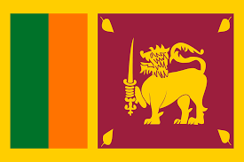

Introduction :

The Sri Lanka Cricket Team represents Sri Lanka in international cricket. It is managed by Sri Lanka Cricket (SLC). Sri Lanka is known for its spin bowling and skillful batsmen.
Sri Lanka became a full member of the ICC in 1981 and played its first Test match in 1982 against England.
Formats of Cricket Played by Sri Lanka
The Sri Lanka cricket team plays cricket in three main formats:
1. Test Cricket
- Longest format of cricket
- Played for 5 days
- Each team plays two innings
- Players wear white clothes
- Played with a red ball
2. One Day International (ODI)
- Match of 50 overs per team
- Played in one day
- Players wear colored jerseys
- Played with a white ball
3. Twenty20 International (T20I)
- Shortest format of cricket
- 20 overs per team
- Very fast and entertaining
- Played mostly at night under lights
Information:
- 🏆 ICC Cricket World Cup: 1996
- 🏆 ICC T20 World Cup: 2014
- 🏏 Produced legendary players like Muralitharan